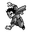
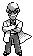
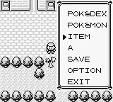
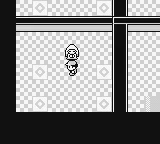
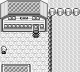

The 8 Badges #
Next, I focused on what it takes to beat the 8 gym leaders. The gym leaders upon defeat, give the main character a “badge.” Badges either unlock the ability to use a taught field move or apply permanent stat modifiers to the agent’s party. Below is a table of the gym leaders of Pokémon, their types and what they unlock.
| Gym Leader | Type | Reward |
|---|---|---|
Brock |
Rock | - 12.5% ATTACK boost - Can use FLASH outside of battle |
Misty |
Water | - Can use CUT outside of battle |
Lt. Surge |
Electric | - 12.5% DEFENSE boost - Can use FLY outside of battle |
Erika |
Grass | - Can use STRENGTH outside of battle |
| Koga  |
Poison | - 12.5% SPEED boost - Can use SURF outside of battle |
Sabrina |
Psychic | |
| Blaine  |
Fire | -12.5% SPECIAL boost |
| Giovanni |
Ground |
I emphasized 5 gym leaders. Why? Because these gym leaders can be accomplished in nearly any order. The vast majority of storyline events are gated by Misty, Erika, and Koga who give access to the field moves CUT, STRENGTH and SURF outside of battle. How to obtain these field moves will be discussed in a later section.
Some gym leaders require solving puzzles or removing environmental guards.
Lt. Surge’s Gym Gimmick #

To enter Lt. Surge’s gym you must remove a tree blocking the entrance to his gym with Cut.
Lt. Surge’s gym contains a button puzzle. To acquire the ability to battle Lt. Surge, you are given an array of trashcans. Two of the trashcans have a button that can be pressed. You must press the two buttons in a specific order. If you mess up, the buttons are randomly assigned to different trashcans.
Erika’s Gym Gimmick #

To enter Erika’s gym you must remove a tree blocking the entrance to her gym with cut. In her gym, she will be guarded by multiple trainers you must defeat and more trees to cut. Notably, the sprite for the trees within the gym are different from the tree sprite outside the gym.
Koga’s Gym Gimmick #

Koga’s gym contains an easy maze made up of invisible barriers you have to traverse.
Sabrina’s Gym Gimmick #

Sabrina’s gym can only be entered after completing the Team Rocket storyline. Her gym contains a teleporter maze. To get to Sabrina, you must find the teleporter that will transport you to her.
Blaine’s Gym Gimmick #

To enter Blaine’s gym the agent must first Surf to Cinnabar Island where the gym is located. Subsequently, the agent must acquire the “SECRET KEY” from the Pokémon Mansion next door to his gym Surf. To battle Blaine, the agent must complete a series of optional True/False quizzes. If the agent incorrectly answers, the agent battles a trainer.
Giovanni’s Gym Gimmick #

Giovanni’s gym is blocked until you beat all 7 prior gym leaders. Giovanni’s gym contains a maze puzzle with “spin tiles.”
The agent must be capable of solving all these tasks.